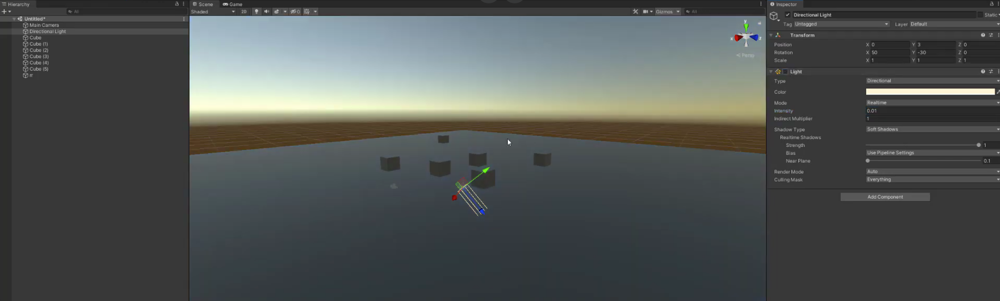
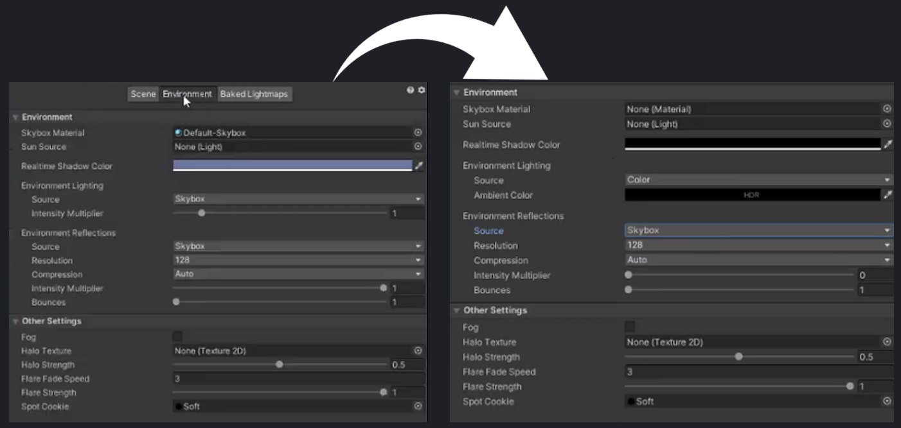

Light and Dark
Full Gameplay
The Process
In this game jam I collaborated with a fellow student who was proficient in 3d modelling unlike myself and so I was in charge of making the mechanics, putting together the level, and exporting the package in Unity. (The platform model I got from Sketchfab and was actually a dock but I re-arranged parts of it to make long and short platform prefabs)
We collaborated on an idea where you somehow find yourself in a pitch black cave where you
will need to scale an abandoned mineshaft to reach the light at the top of the cave.
There is a lamp lying next to you, when you pick up the lamp, its fuel depletes overtime,
making the area of how much you can see smaller and smaller. You'll have to refill the lamp
at oil refill points on the path towards the light in order to escape the cave.
I've made this a first person, 3d platformer which works with the lamp mechanic as the player
has to jump across platforms from the abandoned mineshaft while being wary of the time limit
they have for their visibility of the platform they have to jump to next.

For usual Unity projects, you cant get complete darkness even if you disable all of the lights
in the scene, there is still some light bleeding in somehow.
I wanted my game to have complete darkness when the lamp has no light so the player can't see
the next platform they need to jump to so they are dependent on the lamp light and keeping it up.
I made my project in Unity's Universal Render Pipeline which as more settings in controlling how the game looks than in the standard render pipeline. 
In the environment tab in the lighting settings under rendering:
- I set the skybox material to none
- I set the intensity multiplier to zero
- I turned the real-time shadows and ambient colour to black
These settings made the objects in the scene turn dark but the skybox was only turned a dull
blue colour by these settings and not pitch black. I then went to the camera components in
the scene's main camera and set the background type from skybox too Uninitiated in the
environment section of the camera component.
With these settings, it effectively made the scene pitch black without any light sources.
The following scrips are the scripts that control the main mechanics of the game.
Script to control the mechanics of the lamp and the oil / light depletion mechanic:
With the way I'd made the the oil depleting system, it depletes by intervals of 0.5 values
every second. Which means that the player will have a total of 20 seconds to get from oil
refill point to oil refill point to have the most up-time for visibility.
However, this may look odd as the range is decreasing in "steps". Initially for this
mechanic, I wanted to use a loop to make the mechanic but the usage of a for loop did not
work for me and I was not confident in using a while loop.
To improve this mechanic, I would find a way to make this mechanic more smooth in
decreasing the range of the lamp light over time.
Script attached to oil refill points that refills the lamp to its max amount:
This code only triggers of the lamp game object enters the trigger zone of the oil refill
point instead of triggering from when the player steps on it. This is because it gets the
lamp script that is attached to the lamp game object. This may create issues such as when
the player steps on the oil refill point and expect the oil to refill but the lamp game
object did not end up triggering the oil refill point, this may cause confusion and impair
the player experience.
To improve this mechanic, I would make it so that it triggers when the player enters the
trigger zone of the oil refill point.